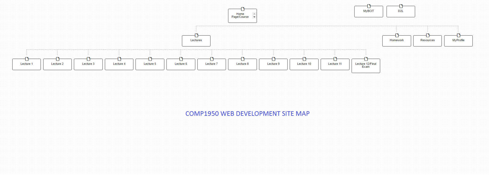

Contributors
Braydon Swanson
Braydon is an aspiring front-end web developer, who has been building things as long as he can remember. His approach to web design is one of simplicity, with a less is more attitude.
Responsibilities
- Information Architecture & Wireframing
- Design direction and primary stylesheet
- Homepage, Lecture, and Profile page creation
- Site Map
- Print Styles
Tucky Aalto
Tucky is an aspiring developer and interface designer, with a background in design and sales. She values succinct solutions, efficiency of use, and practicality.
Responsibilities
- Information Architecture & Wireframing
- Navigation, UI, and scripting
- Homework page creation and content integration
- Meta page creation
- Projector Styles
Objective:
Using the skills we've acquired over the course of the semester, our mission is to redesign the Comp1950 website to better meet the needs of students, while maintaining functionality and ease of use for the instructors.
Our Focus:
We wanted to address issues pertaining to content navigation, due to the extensive volume of information provided on the website.
Additionally, we opted to take an new approach to how homework is presented throughout the course, to improve clarity of expectations and deliverables, between students and instructors.

The Plan
We went into this project in agreement that the sheer mass of information housed within the COMP1950 site, needed to be made cleaner and more easily accessible; We wanted to keep the layout simple.
We started by sketching out some wireframes, to decide how the bulk of the information would be organized.
Site Structure
The COMP1950 website is relatively simple, and that wasn't something we wanted to mess with too much. We took steps to condense rarely accessed information, while improving accessibility to highly trafficked information.
We made the choice to combine the 'Home' and 'About the Course' pages to keep things tight and concise; A page where students can see exactly what they can expect, and the types of topics they will be tackling throughout the course. As this information is rarely looked at after the first week or so, it made sense to condense it into a single page.
Alternatively, we added a new page for Homework, where students can find a clear run-down of the assignments they may be working on, and any additional resources.
A student profile page was added to give an at-a-glance run down of the students progress throughout the course, including project completion status, and grades.
The pages we created can be accessed here:
Navigation
We immediately knew that we wanted to move the primary navigation menu off-screen, in order to free up some breathing room for the bulk of the content. Using javascript, we created a simple side-sliding menu that could be accessed via a tab in the top left corner, regardless of where you are on the site.
The added benefit of doing this, was that it gave us some room to add page-specific navigation to better traverse the breadth of content on our lecture pages. We wanted to do this, as throughout the course we experienced difficulty in locating specific content within the lecture pages, due to the lack of differentiation between sections.
We did this with a simple repurposing of the lecture agenda, by allowing the topics to be compressed into a quick navigation menu as the page is scrolled.
Personalization
The COMP1950 website is an invaluable resource for students as it is the primary source of information and study materials throughout the duration of the course. While the D2L offers some great features for accessing files and checking your grades, their is a distinct disconnect between the two.
We suggest the inclusion of a student log in, to not only improve security as per our clients wishes, but also to create a feature that will help to streamline the homework process throughout the program, which we will expand on below.
Making Homework Work
There is a constant need to switch back and forth between both the COMP1950 website and D2L in order to determine what the homework assignments are, to reference the study material, and to ensure that you've met all of the necessary requirements.
While homework assignments are outlined at the bottom of their individual lectures, we have also chosen to compile the assignments into a homework specific page. (Using server side includes, we've ensured that instructors can easily update the homework as necessary, and have the information update in all relevant sections.)
One of the most important features we have added, is the homework checklist, which due to our inclusion of a student log in, will allow students to keep track of their progress on an assignment, and never miss out on required criteria. Students can easily reference the requirements, and save their progress.